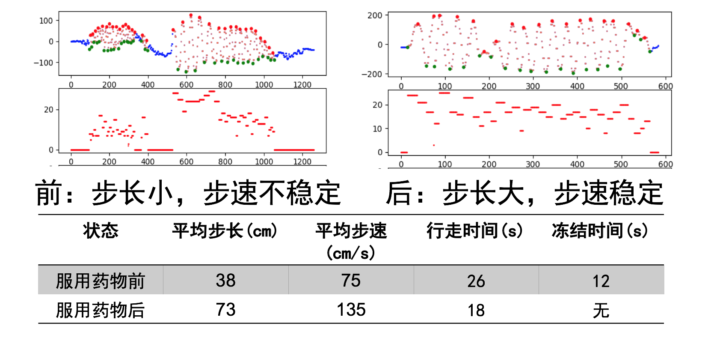
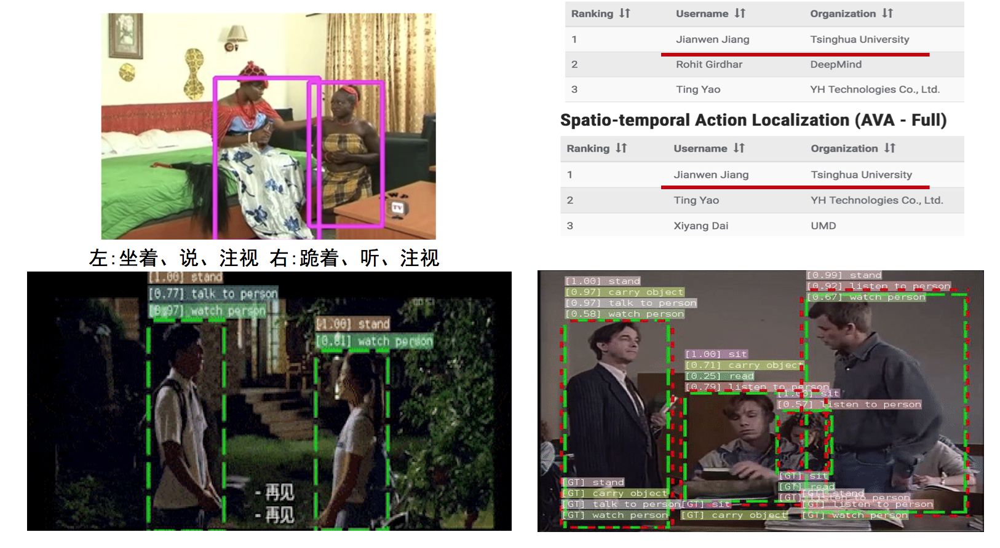

冯玉彤，陈自强
利用单目相机采集的视频数据，对人体提取出骨架信息后，实现实时判断人体当前执行的动作种类。
帕金森患者的治疗期间需要定期到医院进行随访，进行病情严重程度评估，但由于每次随访诊断的时间相对患病周期而言极短，对病情的评估存在很大的时间偶然性，评估效果不够准确；此外，对于帕金森病的病情程度的诊断，目前还主要采用主观评价指标，对病情的判断依赖于医生的肉眼观察、主观判断，亟需针对病情制定客观的量化标准，并开发相应的指标量化工具。
我们在解放军总医院搭建了对帕金森患者的视频采集集成设备，采集患者进行一个步行区间内的多目视频数据用于后续量化研究。通过量化算法生成患者的步态量化曲线，反应其每时刻的当前状态、步长、步时等，并由此统计其冻结时长、平均步速等数据，从而评估患者当前的病情状况。

在2018年的国际动作识别大赛（ActivityNet）的时序动作定位赛道（Temporal Action Localization）中，击败 Google OpenMind 等夺得冠军。
